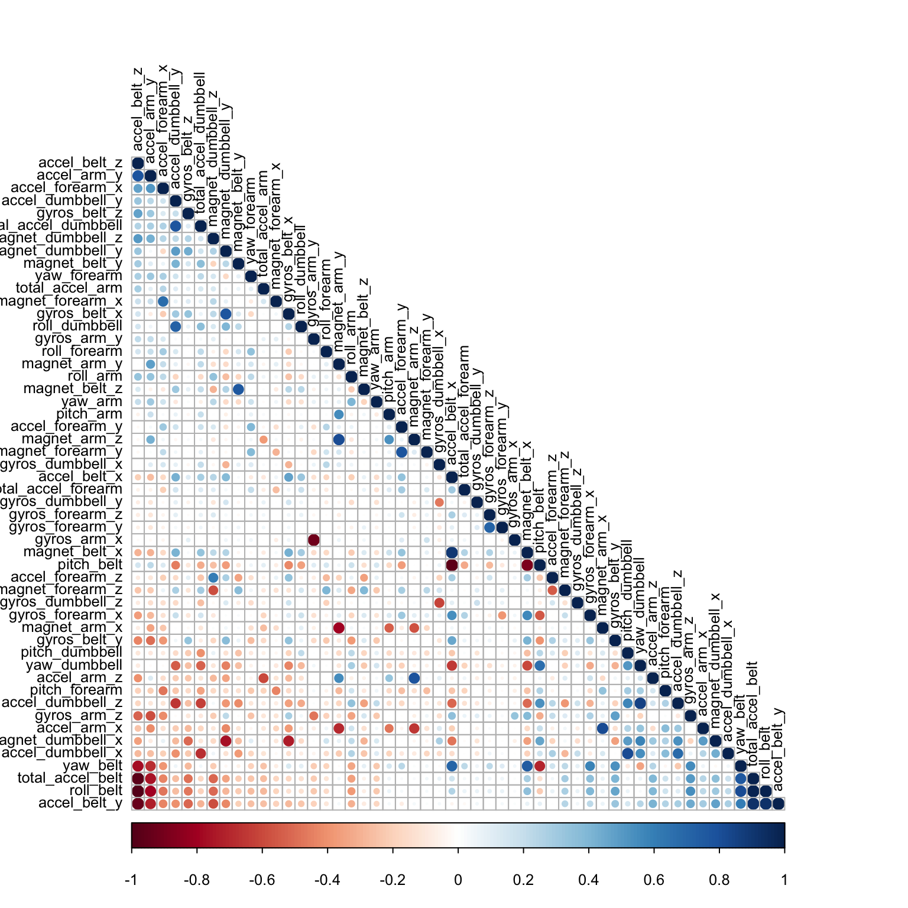

Using devices such as Jawbone Up, Nike FuelBand, and Fitbit it is now possible to collect a large amount of data about personal activity relatively inexpensively. These type of devices are part of the quantified self movement - a group of enthusiasts (including the author) who take measurements about themselves regularly to improve their health, to find patterns in their behavior, or because they are tech geeks. One thing that people regularly do is quantify how much of a particular activity they do, but they rarely quantify how well they do it.
The aim of this report was to use data from accelerometers placed on the belt, forearm, arm, and dumbell of six participants to predict how well they were doing the exercise in terms of the classification in the data.
## Loading required package: lattice
## Loading required package: ggplot2
## randomForest 4.6-10
## Type rfNews() to see new features/changes/bug fixes.directory <- "data"
training_file <- "training.csv"
testing_file <- "testing.csv"
if (!file.exists(directory)) {
dir.create(directory)
}
# curl option needed on OSX to access https urls
download.file("https://d396qusza40orc.cloudfront.net/predmachlearn/pml-training.csv", destfile = paste("./", directory, "/", training_file, sep=""), method="curl", quiet=TRUE)
download.file("https://d396qusza40orc.cloudfront.net/predmachlearn/pml-testing.csv", destfile = paste("./", directory, "/", testing_file, sep=""), method="curl", quiet=TRUE)Training data was read from the csv file, and some data cleaning was done. The first seven columns (data specific to each record, such as name, timestamps, etc) were removed. Columns that contained any NAs were also removed. This left a total of 52 columns + the “classe” column to be predicted.
data_training <- read.csv(paste("./", directory, "/", training_file, sep=""), na.strings= c("NA",""," "))
data_training_clean <- data_training[8:length(data_training)]
data_training_NAs <- apply(data_training_clean, 2, function(x) {sum(is.na(x))})
data_training_clean <- data_training_clean[,which(data_training_NAs == 0)]
ncol(data_training_clean)## [1] 53The cleaned data was then split into training and cross-validation sets.
inTrain <- createDataPartition(y = data_training_clean$classe, p = 0.7, list = FALSE)
training <- data_training_clean[inTrain, ]
validation <- data_training_clean[-inTrain, ]A random forest model was selected first because it is purported to have high accuracy. One downside is fitting the model was very slow. Because the random forest model was so slow, a second model using boosting was also performed.
The correlation between any two trees in the forest increases the forest error rate. Therefore, a correllation plot was produced in order to see how strong the variables relationships are with each other (Exhibit 1).
system.time(model1 <- train(classe ~ ., data=training, method="rf"))## user system elapsed
## 3340.019 21.569 3366.086model1## Random Forest
##
## 13737 samples
## 52 predictor
## 5 classes: 'A', 'B', 'C', 'D', 'E'
##
## No pre-processing
## Resampling: Bootstrapped (25 reps)
##
## Summary of sample sizes: 13737, 13737, 13737, 13737, 13737, 13737, ...
##
## Resampling results across tuning parameters:
##
## mtry Accuracy Kappa Accuracy SD Kappa SD
## 2 0.9879224 0.9847166 0.001977812 0.002503508
## 27 0.9882109 0.9850835 0.002154287 0.002721451
## 52 0.9814041 0.9764711 0.004311808 0.005448516
##
## Accuracy was used to select the optimal model using the largest value.
## The final value used for the model was mtry = 27.system.time(model2 <- train(classe ~ ., data=training, method="gbm", verbose=FALSE))## Loading required package: gbm
## Loading required package: survival
## Loading required package: splines
##
## Attaching package: 'survival'
##
## The following object is masked from 'package:caret':
##
## cluster
##
## Loading required package: parallel
## Loaded gbm 2.1
## Loading required package: plyr## user system elapsed
## 1336.494 14.833 1352.783model2## Stochastic Gradient Boosting
##
## 13737 samples
## 52 predictor
## 5 classes: 'A', 'B', 'C', 'D', 'E'
##
## No pre-processing
## Resampling: Bootstrapped (25 reps)
##
## Summary of sample sizes: 13737, 13737, 13737, 13737, 13737, 13737, ...
##
## Resampling results across tuning parameters:
##
## interaction.depth n.trees Accuracy Kappa Accuracy SD
## 1 50 0.7503517 0.6835541 0.006726570
## 1 100 0.8151943 0.7660454 0.005944192
## 1 150 0.8503259 0.8105046 0.005661013
## 2 50 0.8525829 0.8131998 0.005188758
## 2 100 0.9042472 0.8788121 0.004118081
## 2 150 0.9288520 0.9099607 0.003725185
## 3 50 0.8945638 0.8664916 0.004830250
## 3 100 0.9393041 0.9231858 0.003906556
## 3 150 0.9573477 0.9460316 0.003653463
## Kappa SD
## 0.008408959
## 0.007528800
## 0.007169908
## 0.006586873
## 0.005193997
## 0.004700879
## 0.006133477
## 0.004956224
## 0.004618343
##
## Tuning parameter 'shrinkage' was held constant at a value of 0.1
## Accuracy was used to select the optimal model using the largest value.
## The final values used for the model were n.trees = 150,
## interaction.depth = 3 and shrinkage = 0.1.The validation set was then predicted with the 2 models, and a confusion matrix produced, showing a very high accuracy (99.81%) for random forests, and a slightly lower accuracy (96.47%) for boosting. So the out of sample error is very low for either model.The random forest model took about 56 minutes to train, the boosting model only 24 minutes.
predictRFCrossVal1 <- predict(model1, validation)
confusionMatrix(validation$classe, predictRFCrossVal1)## Confusion Matrix and Statistics
##
## Reference
## Prediction A B C D E
## A 1673 0 0 0 1
## B 4 1134 1 0 0
## C 0 6 1019 1 0
## D 0 0 10 954 0
## E 0 0 1 2 1079
##
## Overall Statistics
##
## Accuracy : 0.9956
## 95% CI : (0.9935, 0.9971)
## No Information Rate : 0.285
## P-Value [Acc > NIR] : < 2.2e-16
##
## Kappa : 0.9944
## Mcnemar's Test P-Value : NA
##
## Statistics by Class:
##
## Class: A Class: B Class: C Class: D Class: E
## Sensitivity 0.9976 0.9947 0.9884 0.9969 0.9991
## Specificity 0.9998 0.9989 0.9986 0.9980 0.9994
## Pos Pred Value 0.9994 0.9956 0.9932 0.9896 0.9972
## Neg Pred Value 0.9991 0.9987 0.9975 0.9994 0.9998
## Prevalence 0.2850 0.1937 0.1752 0.1626 0.1835
## Detection Rate 0.2843 0.1927 0.1732 0.1621 0.1833
## Detection Prevalence 0.2845 0.1935 0.1743 0.1638 0.1839
## Balanced Accuracy 0.9987 0.9968 0.9935 0.9974 0.9992predictRFCrossVal2 <- predict(model2, validation)
confusionMatrix(validation$classe, predictRFCrossVal2)## Confusion Matrix and Statistics
##
## Reference
## Prediction A B C D E
## A 1650 13 5 5 1
## B 42 1065 26 4 2
## C 0 35 979 9 3
## D 0 0 26 928 10
## E 1 15 8 16 1042
##
## Overall Statistics
##
## Accuracy : 0.9624
## 95% CI : (0.9573, 0.9672)
## No Information Rate : 0.2877
## P-Value [Acc > NIR] : < 2.2e-16
##
## Kappa : 0.9525
## Mcnemar's Test P-Value : 9.32e-08
##
## Statistics by Class:
##
## Class: A Class: B Class: C Class: D Class: E
## Sensitivity 0.9746 0.9441 0.9377 0.9647 0.9849
## Specificity 0.9943 0.9844 0.9903 0.9927 0.9917
## Pos Pred Value 0.9857 0.9350 0.9542 0.9627 0.9630
## Neg Pred Value 0.9898 0.9867 0.9866 0.9931 0.9967
## Prevalence 0.2877 0.1917 0.1774 0.1635 0.1798
## Detection Rate 0.2804 0.1810 0.1664 0.1577 0.1771
## Detection Prevalence 0.2845 0.1935 0.1743 0.1638 0.1839
## Balanced Accuracy 0.9844 0.9643 0.9640 0.9787 0.9883Finally, the testing set was loaded into R, the same cleaning was done, and the two models applied to classify the test set.
# apply the same treatment to the final testing data
data_test <- read.csv(paste("./", directory, "/", testing_file, sep=""), na.strings= c("NA",""," "))
data_test_NAs <- apply(data_test, 2, function(x) {sum(is.na(x))})
data_test_clean <- data_test[,which(data_test_NAs == 0)]
data_test_clean <- data_test_clean[8:length(data_test_clean)]
# predict the classes of the test set
answers1 <- predict(model1, data_test_clean)
answers1## [1] B A B A A E D B A A B C B A E E A B B B
## Levels: A B C D Eanswers2 <- predict(model2, data_test_clean)
answers2## [1] B A B A A E D B A A B C B A E E A B B B
## Levels: A B C D EBoth random forest and boosting provided excellent accuracy. Boosting was a little faster and slightly less accurate. Both methods scored perfectly on the testing set.
correlMatrix <- cor(training[, -length(training)])
corrplot(correlMatrix, order = "FPC", method = "circle", type = "lower", tl.cex = 0.8, tl.col = rgb(0, 0, 0))